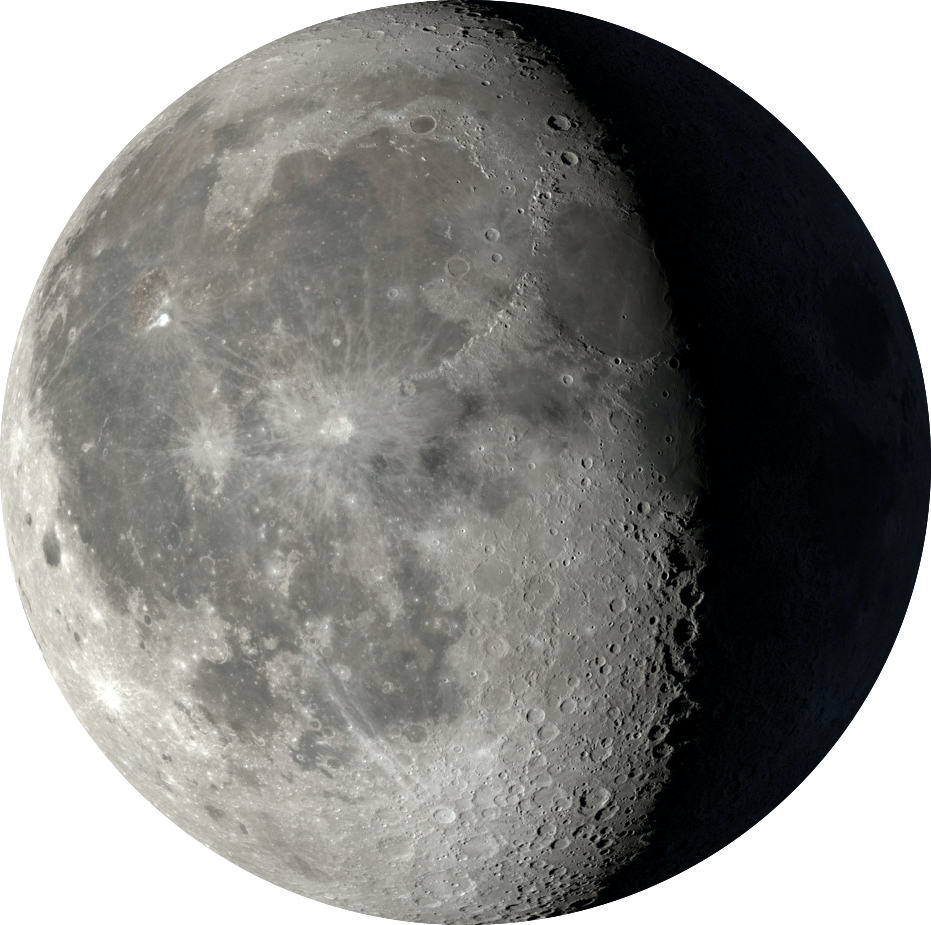
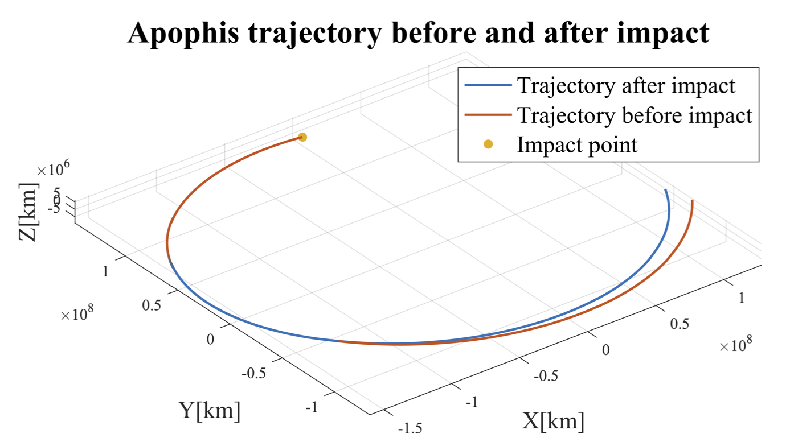
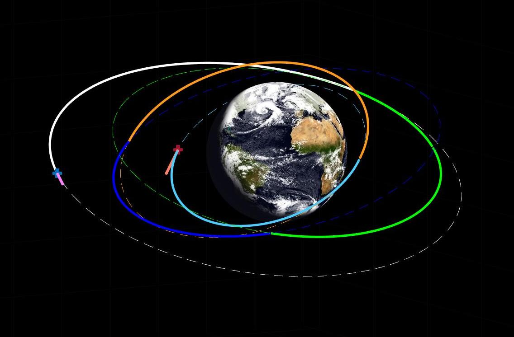
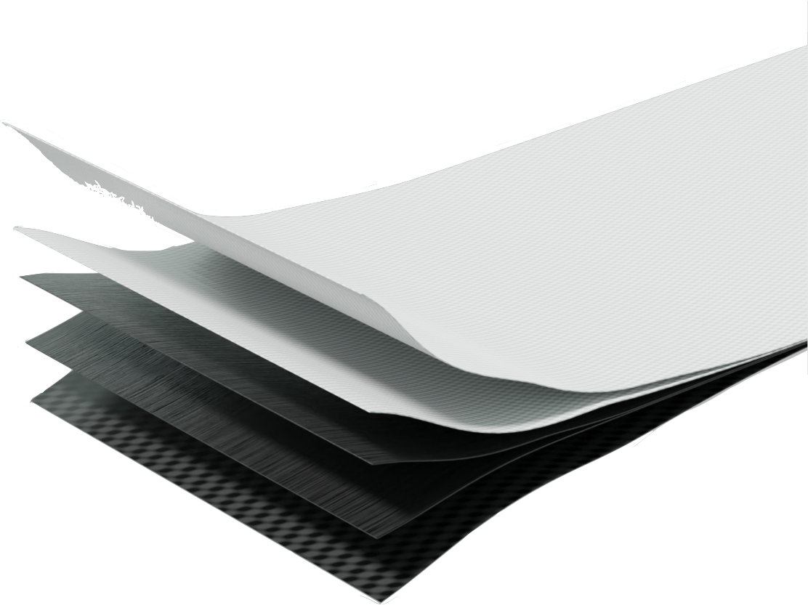
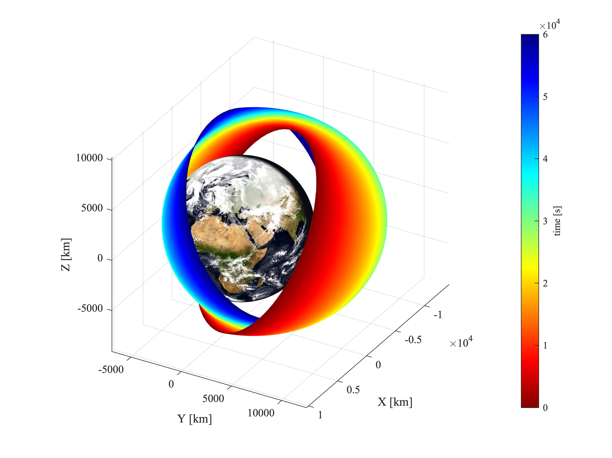
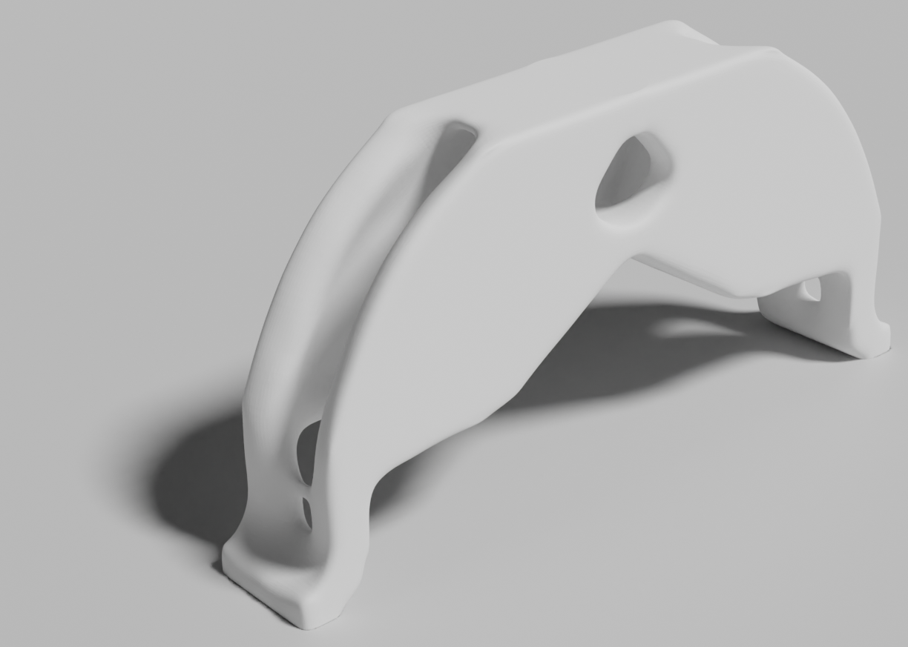
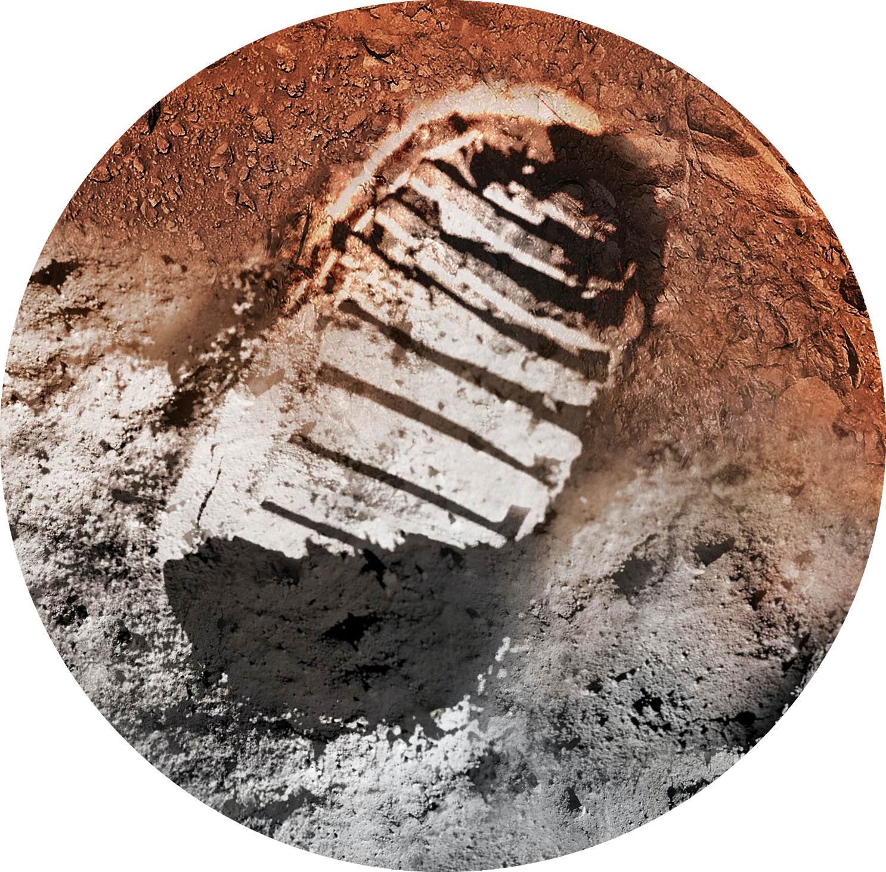

Engineering_
I'm a Space Engineer.
During my years at Politecnico di Milano, where I got both my
I believe we are living extraordinary times for space exploration since we have the chance of becoming
a multi-planetary species.
For this reason, I worked on a thesis focused on DLP additive manufacturing of a lunar
regolith-based photo-curable slurry, as part of the concept of In Situ Resource Utilization (ISRU).
This work allowed me to apply and integrate all the knowledge gained throughout my studies,
combining expertise in 3D modeling, material science, mission analysis, and the adversities
of the space environment.


GNC Projects
I designed a planetary defense mission for asteroid Apophis ahead of its 2029 close encounter
with Earth, optimizing an impactor spacecraft trajectory to maximize Earth-Apophis distance at
closest approach, by tuning departure date, deep-space manoeuvre, and impact epoch.
© 2023 Stefano Negrini
Orbital Mechanics
A project involved in the analysis of two geocentric orbits and the study of orbital
transfers between them. A standard transfer strategy was
defined as a reference baseline, against which several alternative strategies were compared
and evaluated, with the goal of minimizing both the total deltaV, and therefore fuel consumption, and the transfer time.
© 2020 Stefano Negrini

Design and manufacturing of a composite panel with a specific target first natural frequency
This project involved the design of a composite panel with fixed dimensions,
targeting a specific first natural frequency. A MATLAB script was developed to
identify the optimal lamination sequence, minimizing the relative error between
the analytically computed frequency and the target value. The panel was subsequently
manufactured in the laboratory through hand layup of carbon and glass fiber plies.
© 2024 Stefano Negrini


Orbit perturbations
Orbital evolution of a planetary explorer spacecraft under major perturbations,
using two propagation methods and examining the resulting ground track variations.
© 2023 Stefano Negrini
Topology optimization of a structural component for aerospace application
This work addresses the shape optimization of a structural aerospace component through a topology
optimization approach, encompassing the full workflow from geometric modeling and constraint definition to
final design selection.
© 2024 Stefano Negrini

Thesis — ISRU & Additive Manufacturing
In my final year of master, I worked on a thesis focused on DLP additive manufacturing of a lunar
regolith-based photo-curable slurry, as part of the concept of In Situ Resource Utilization (ISRU).
This work allowed me to apply and integrate all the knowledge I gained throughout my studies,
combining expertise in 3D modeling, material science, mission analysis, and the adversities
of the space environment.
